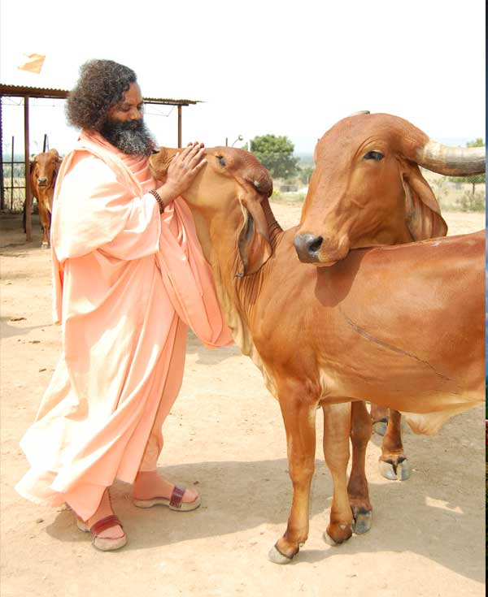

गोशाळा
भगवान श्रीकृष्ण हे पूर्णावतार मानले जातात आणि त्यांनी मानवी कल्याणासाठी गाईची सेवा तसेच दही-दूध-लोण्याची प्रतीकात्मक चोरी करून गाईच्या दुधाचा महिमा लोकांना पटवून दिला. भावी पिढी बलवान, बुद्धिमान आणि निरोगी होण्यासाठी सर्व मुलांना गाईचे दूध मिळाले पाहिजे, हा संदेश या लीलांमधून देण्यात आला. याच धर्तीवर स्वामीजींनीही गुरूकुलातील मुलांच्या आरोग्य व सर्वांगीण विकासासाठी गोशाळा स्थापन करून अनेक गाईंचे संगोपन केले.
भांगशी माता गडावर उभारलेली ही गोशाळा केवळ गाई ठेवण्यासाठीचे बांधकाम नसून, ती एक प्रकारची जीवंत पाठशाळा आहे जिथे गाईची सेवा, संवर्धन आणि संस्कार एकाच वेळी घडतात. येथे गाईंसाठी स्वच्छ व हवेशीर गोठे, पिण्यासाठी शुद्ध पाणी, योग्य चारा व औषधोपचाराची व्यवस्था करून त्यांचे संगोपन प्रेमाने केले जाते. गडावर येणारे भाविक व गुरूकुलातील विद्यार्थी सकाळ-संध्याकाळ गाईंच्या सेवेत सहभागी होऊन नम्रतेने गोमातेचे पूजन करतात आणि प्रत्यक्ष सेवा करून दया, करुणा आणि सहजीवनाचे मूल्य आत्मसात करतात.
गाईचा महिमा केवळ दुधापुरता मर्यादित नसून तिच्यापासून मिळणारे गोमूत्र, गोमय, तूप, दही, लोणी हे सर्व आरोग्य, शेती आणि पर्यावरणासाठी अत्यंत उपयुक्त मानले गेले आहेत. गाईच्या शेणापासून तयार होणारे खत जमिनीची सुपीकता वाढवते, तर गोमूताचा उपयोग औषधी व जैविक कीडनाशक म्हणून होतो, यामुळे रासायनिक खतांवरील अवलंबित्व कमी होऊन नैसर्गिक शेतीला चालना मिळते. अशा प्रकारे भांगशी माता गडावरील गोशाळा ही केवळ धर्मस्थळाचा भाग नसून, आरोग्यदायी जीवनशैली, स्वच्छ पर्यावरण आणि टिकाऊ शेतीची प्रेरणा देणारे केंद्र बनले आहे.
आजच्या वेगवान आणि भौतिकतावादी जीवनशैलीत गाईचे रक्षण व संवर्धन हे भारतीय संस्कृतीचे आणि आध्यात्मिकतेचे जतन करणारे अत्यंत महत्त्वाचे कार्य आहे. गोसंरक्षण म्हणजे केवळ एका प्राण्याचे रक्षण नाही, तर निसर्ग, मानव आणि पशू यांच्यातील पवित्र नात्याचा सन्मान करणे होय. भांगशी माता गडावर सुरू असलेली गोसेवा, गोशाळा उभारणी आणि गाईंचे संगोपन हे समाजाला प्रत्यक्ष कृतीतून हा आदर्श दाखवतात आणि प्रत्येक भक्ताला “गोमातेचे रक्षण म्हणजेच राष्ट्ररक्षण” हा संदेश शांतपणे पण ठामपणे देतात.
